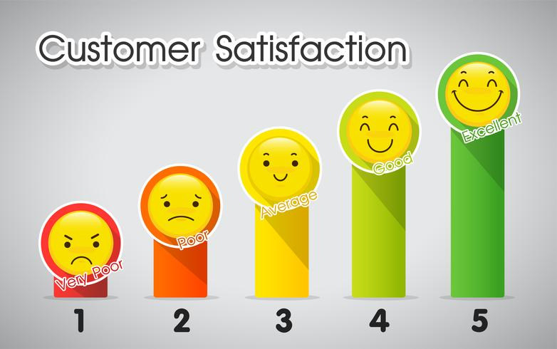

Pour ce projet, j'avais pour but de créer un portfolio interactif mettant en avant mes compétences
d'analyse de données, de gestion de projet, en étant aligné avec les besoins d'exigeance d'Aéroworld.
Structuré en 4 tableaux de bord : un état des lieux du projet, une planification(Gantt) de celui-ci, suivit d'un profil visuel
et pour finir un résumé des projets clés démontrant mon expertise.


Dans ce projet, j'ai réalisé des requêtes SQL sur les données d'une société d'assurance afin de mieux comprendre ses clients en analysant le marché de l'assurance habitation et d'aider à la prise de décision stratégique.

Dans ce projet, j'ai contribué à l'agrégation et au nettoyage des données pour une société de courtage d'assurances automobiles, en définissant des règles et en mettant en place des processus internes pour assurer la collecte, le traitement et la documentation des données clients selon les normes et bonnes pratiques.

En créant une base de données conforme aux normes réglementaires et aux besoins des clients, j'ai effectué des requêtes SQL pour répondre à des problématiques métier, tout en respectant les exigences du RGPD.
J'ai aidé un manager de la grande distribution à nettoyer ses données et résoudre les incohérences en effectuant des analyses univariées et multivariées sur les données pré-traitées, tout en explorant et en analysant les données à l'aide de Python.

J'ai mis en place un tableau de bord dynamique pour améliorer le suivi et faciliter la gestion des projets au sein d'une entreprise du secteur de la santé, en proposant des visualisations accessibles et adaptées au public cible et aux types de données. J'ai produit des reportings en analysant ces visualisations afin de faciliter la prise de décision, optimiser le suivi des projets et identifier les retards.

Dans ce projet, j'ai analysé et prédit les prix immobiliers à Paris en utilisant des algorithmes de régression, puis appliqué un algorithme de clustering (K-means) pour classer des biens immobiliers afin d'optimiser les décisions d'achat pour un client dans l'immobilier. J'ai présenté les résultats de manière claire et accessible pour un public non technique.